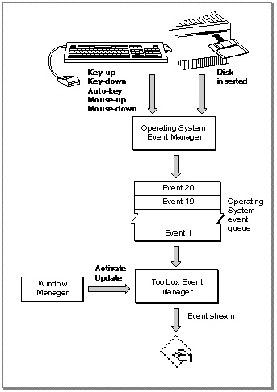

Legacy Document
Important: The information in this document is obsolete and should not be used for new development.
Important: The information in this document is obsolete and should not be used for new development.


Low-Level Events
The Event Manager uses low-level events to report very low-level hardware and software occurrences. Low-level events report
Low-level events that report actions by the user include mouse-down, mouse-up, key-down, key-up, auto-key, and disk-inserted events. The Event Manager reports any of these events when the user performs the action associated with each event.
- actions by the user (such as pressing the mouse button, typing on the keyboard, or inserting a disk)
- changes in windows on the screen
- that the Event Manager has no other events to report
Mouse-down and mouse-up events report that the user pressed or released the mouse button. For these events the Event Manager returns the location of the cursor at the time the mouse button was pressed or released. Key-down and key-up events report that the user pressed or released a key. Auto-key events report that the user has held a key down for a certain amount of time. For keyboard-related events, the Event Manager reports which key was pressed. For mouse-related and keyboard-related events, the Event Manager also reports the state of the modifier keys (the Option, Command, Caps Lock, Control, and Shift keys) at the time of the event.
When the user inserts a disk, the Operating System attempts to mount the volume on the disk by calling the File Manager function
PBMountVol. The Operating System Event Manager then generates a disk-inserted event. If the user is interacting with a standard file dialog box, the Standard File Package intercepts the disk-inserted event and handles it. Otherwise, the event is left in the event queue for your application to retrieve. In most cases your application can handle unexpected disk-inserted events by simply checking to see if the volume was successfully mounted.Update events and activate events are two types of low-level events that the Event Manager can report as a result of changes in the appearance of windows on the screen. For example, if a user is working with several open documents belonging to your application, you can allow the user to switch from one document to another when the user clicks in the appropriate window. You can determine whether the user clicked in another window by using the Window Manager function
FindWindow; if the user clicked in another window, you can then use the Window Manager procedureSelectWindowto generate the necessary activate events. Before the Event Manager sends your application any activate events relating to this occurrence, the Window Manager does some work for you, such as unhighlighting the deactivated window and highlighting the newly activated window. At your application's next request for an event, the Event Manager returns an activate event.An activate event indicates the window involved and whether the window is becoming activated or deactivated. Your application should perform any other necessary actions to complete the transformation of the window from active to inactive or vice versa. For example, when a window becomes active, your application should show any scroll bars and restore any selections.
Your application typically receives an activate event for the window being deactivated, followed by an activate event for the window becoming active at your application's next request for an event.
The Window Manager generates update events to control the appearance of windows on the screen. The Window Manager keeps track of the front-to-back ordering of windows and allows windows to overlap other windows. The Window Manager coordinates the display of windows. When one window covers another window and then the user moves the first window, the Window Manager generates an update event so that the contents of the newly exposed area can be updated. The Event Manager reports update events as needed to the applications whose windows need updating. Unlike other low-level events, update events can be directed to the foreground process or background processes.
- Note
- If the user switches between your application and another application (by clicking in the window of another application, for example), your application is responsible for activating or deactivating any windows
as appropriate. Your application is notified of this occurrence
through operating-system events. If your application has the acceptSuspendResumeEvents and doesActivateOnFGSwitch flags set in its'SIZE'resource, your application is notified of the switch through an operating-system event and does not receive a separate activate event when the user switches between applications.
Activate and update events generated by the Window Manager are not placed into the Operating System event queue but are sent directly to the Event Manager.
The Event Manager reports a null event when your application requests an event and your application's event stream does not contain any of the requested event types. By using the
WaitNextEventfunction, you can yield time to other processes when null events are the only pending events for your application.When your application receives a null event, your application can do idle processing (such as blinking the caret) if it is in the foreground or do other tasks if it is in the background. If you want your application to receive null events when it is in the background, you must set the
canBackgroundflag in your application's'SIZE'resource. If your application does not perform any processing in response to null events when it is in the background, then set thecannotBackgroundflag. If you set thecannotBackgroundflag, the Event Manager does not report null events to your application when it is in the background. However, the Event Manager still reports update events (and high-level events if theisHighLevelEventAwareflag is set in the'SIZE'resource) to your application when it is in the background regardless of how the background flag is set.Figure 2-2 shows the various kinds of low-level events your application can receive. See "Handling Low-Level Events" beginning on page 2-32 for complete details of how your application should respond to low-level events.
